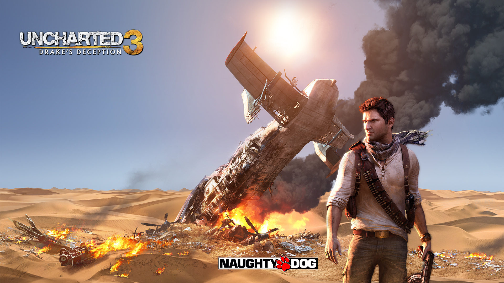

Mi videojuego favorito: Uncharted 3

¿Porque es mi favorito?
Este juego fue el primero que jugue en la PS3, recuerdo jugarlo por primera vez, me cautivo la trama, y la jugabilidad, a pesar de ser un juego con entregas anteriores no tuve dificultad en endender la historia, la recoleccion de tesoros a manera de coleccionables y el explicar un poco de historia real a medida que pasan los eventos del juego son unas de las razones por las que es mi favorito. Una de las frases emblematicas de este juego es SIC PARVIS MAGNA que se puede traducir como "Lo grande empieza pequeño"